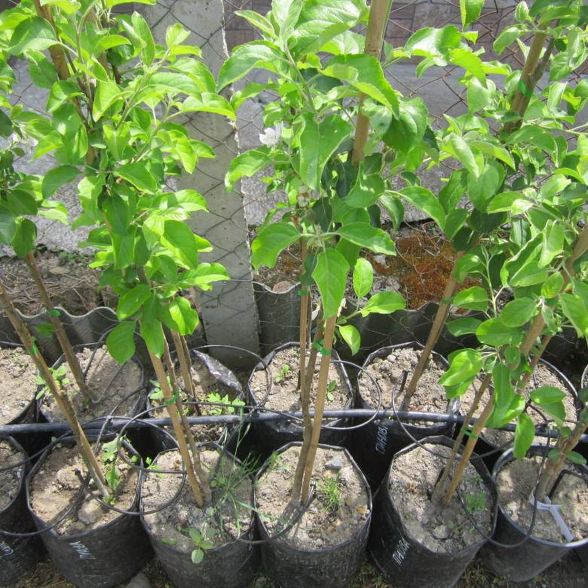
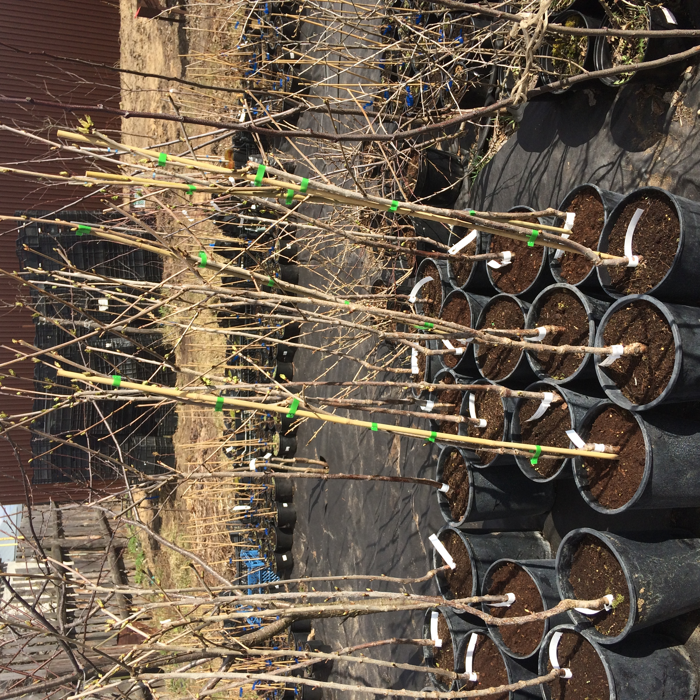
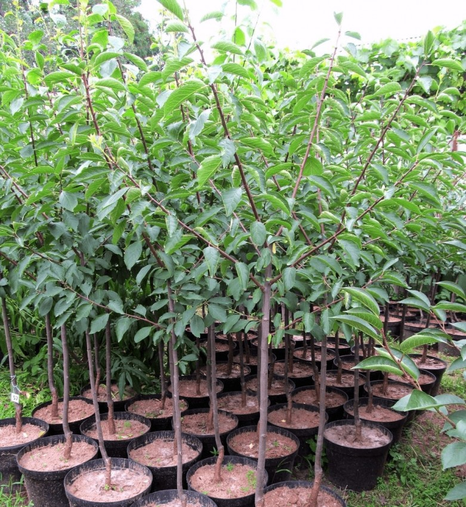

Саженцы яблони характеризуются прямыми и прочными стволами, коричнево-серой корой, которая с возрастом может трескаться. Листья яблони овальные, с гладким или слегка зубчатым краем, темно-зеленого цвета. Цветение яблони происходит весной и сопровождается появлением белых или розовых цветов, которые затем превращаются в плоды – яблоки разных сортов, цветов и вкусов.

Вишневые саженцы имеют тонкие, гибкие стволы и ветви, покрытые гладкой корой коричневого цвета. Листья овальные, заостренные, с зубчатым краем, насыщенного зеленого цвета. Весной вишня цветет белыми или розоватыми ароматными цветами, собранными в небольшие соцветия. Плоды вишни – сочные, красные или темно-красные ягоды с характерным кисло-сладким вкусом.

Саженцы сливы имеют стройные, гибкие стволы и ветви с коричневой или серой корой. Листья овальные, с мелкозубчатым краем, темно-зеленого цвета и гладкой текстурой. Слива цветет весной, радуя глаз белыми или светло-розовыми цветами. Плоды сливы – сочные, округлые или овальные, разных оттенков – от желтого и зеленого до фиолетового и темно-синего, с характерным сладким или кисло-сладким вкусом.